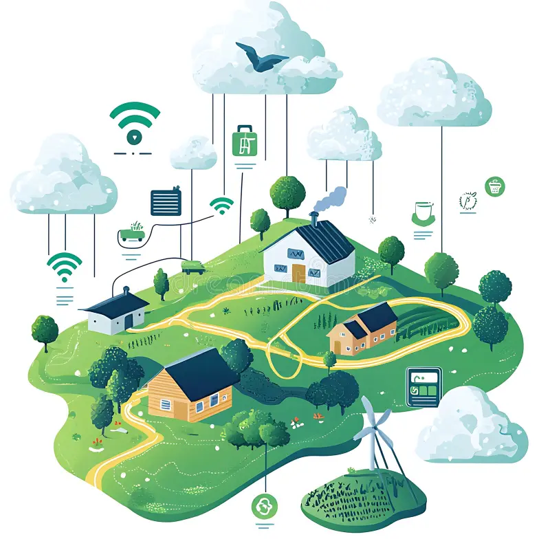
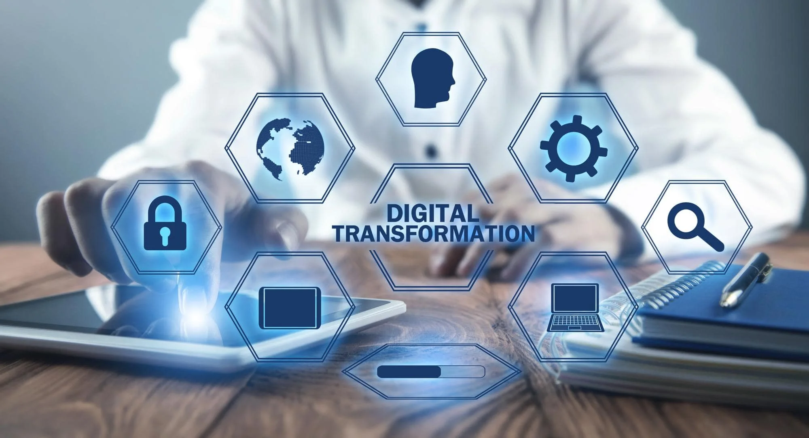

"مصر الرقمية" هي مبادرة وطنية تهدف إلى بناء مجتمع يعتمد على التكنولوجيا الحديثة في كل مجالات الحياة.
أطلقتها الحكومة المصرية لتسهيل حياة المواطنين وتحسين أداء الخدمات الحكومية من خلال التحول إلى النظام الرقمي.
تعمل مصر الرقمية على جعل التعاملات الحكومية أكثر سرعة وشفافية، بحيث يمكن للمواطن الحصول على الخدمات إلكترونيًا دون الحاجة للذهاب إلى المصالح الحكومية.
وتشمل المبادرة تطوير البنية التحتية للاتصالات، وإنشاء قواعد بيانات مترابطة، واستخدام الذكاء الاصطناعي لتحليل البيانات ودعم اتخاذ القرار.

أهداف مشروع مصر الرقمية
تطوير الخدمات الحكومية لتصبح إلكترونية بالكامل وسهلة الاستخدام.
تعزيز الكفاءة الحكومية من خلال استخدام التقنيات الحديثة.
تحقيق الشفافية ومكافحة الفساد الإداري.
تمكين المواطنين من الوصول إلى الخدمات في أي وقت ومن أي مكان.
تطوير الاقتصاد الرقمي وجعل مصر مركزًا تكنولوجيًا في الشرق الأوسط.
تحسين جودة التعليم والصحة من خلال التحول الرقمي.
من أبرز إنجازات المشروع حتى الآن إطلاق بوابة "مصر الرقمية" التي توفر أكثر من 130 خدمة حكومية رقمية تشمل الأحوال المدنية، التموين، المرور، والتأمينات الاجتماعية.

التعليم الرقمي
التعليم الرقمي هو أحد أهم ركائز مصر الرقمية.
تهدف الدولة إلى تحويل التعليم إلى تجربة تفاعلية تستخدم التكنولوجيا لتسهيل الفهم وتشجيع الابتكار.
وقد تم إطلاق منصة مصر التعليمية وبنك المعرفة المصري لتوفير محتوى تعليمي مجاني للطلاب والمعلمين.
كما تم توزيع الأجهزة اللوحية على طلاب الثانوية العامة، وإتاحة الامتحانات الإلكترونية لضمان الشفافية وسرعة التقييم.
وتعمل وزارة التربية والتعليم على تدريب المعلمين على استخدام المنصات الرقمية وأدوات التعليم الحديثة.
الاقتصاد الرقمي
الاقتصاد الرقمي أصبح جزءًا أساسيًا من رؤية مصر 2030.
يعتمد على توظيف التكنولوجيا لتعزيز النمو الاقتصادي وزيادة فرص العمل.
تعمل الحكومة على دعم الشركات الناشئة في مجالات البرمجة والتجارة الإلكترونية والذكاء الاصطناعي،
كما تم إنشاء مناطق تكنولوجية في عدة محافظات مثل أسيوط، برج العرب، والسادس من أكتوبر لتشجيع الاستثمار في مجال التكنولوجيا.
كما تم دعم أنظمة الدفع الإلكتروني لتسهيل المعاملات المالية، وزيادة الاعتماد على الخدمات المصرفية عبر الإنترنت.
التحول التكنولوجي في الحياة اليومية
التحول الرقمي لم يعد مجرد فكرة بل أصبح واقعًا ملموسًا في حياة المصريين اليومية.
يمكن للمواطن الآن دفع فواتير الكهرباء والمياه والغاز من خلال تطبيقات الهواتف المحمولة،
كما يمكنه حجز المواعيد الطبية أو استخراج الوثائق الحكومية إلكترونيًا.
كما ساعدت التكنولوجيا في تحسين جودة الخدمات المقدمة للمواطنين مثل النقل الذكي،
حيث تم إدخال أنظمة الدفع الإلكتروني في وسائل المواصلات العامة،
وتطبيقات لمتابعة حركة الحافلات والقطارات في الوقت الفعلي.
حماية البيانات والأمن السيبراني
مع التوسع في استخدام التكنولوجيا، أصبح الأمن السيبراني من أهم التحديات التي تواجه الدول.
لذلك تولي مصر اهتمامًا خاصًا بحماية بيانات المواطنين وتأمين شبكاتها الرقمية.
تم إنشاء المركز الوطني للأمن السيبراني،
ووضع قوانين تنظم حماية البيانات الشخصية وتمنع استخدامها بشكل غير قانوني.
كما يتم تنفيذ حملات توعية للمواطنين حول كيفية حماية حساباتهم ومعلوماتهم على الإنترنت.
الأمن السيبراني لا يحمي فقط الأفراد، بل يضمن أيضًا سلامة البنية التحتية الوطنية مثل الكهرباء والمياه والمصارف.